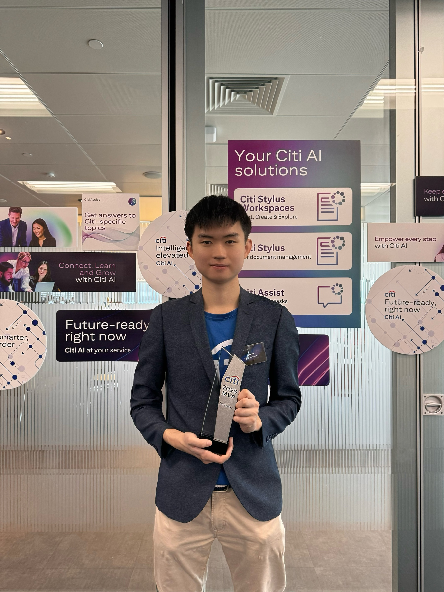
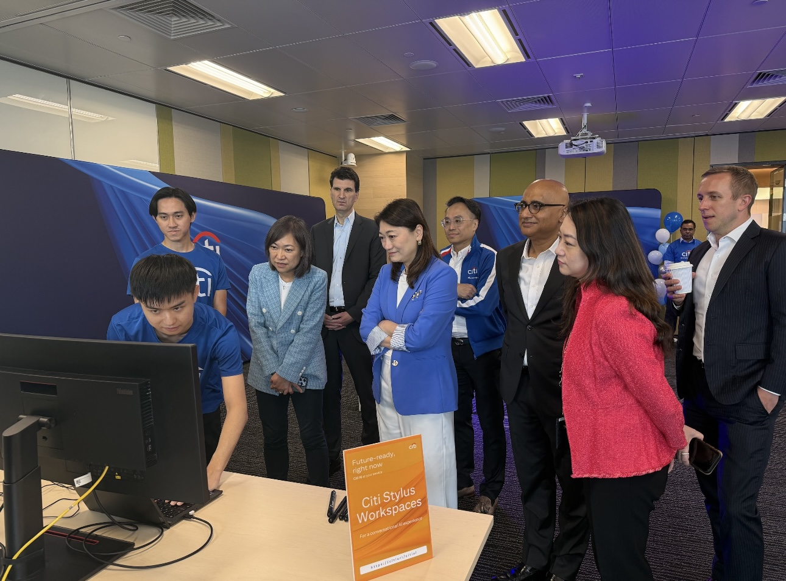
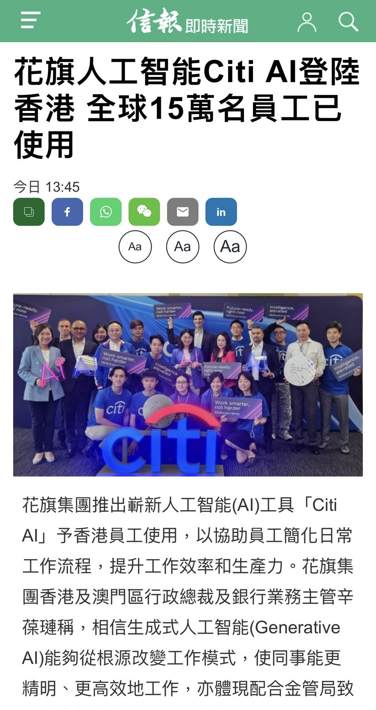
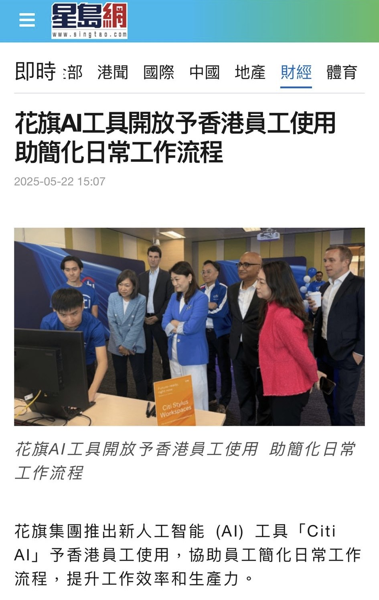
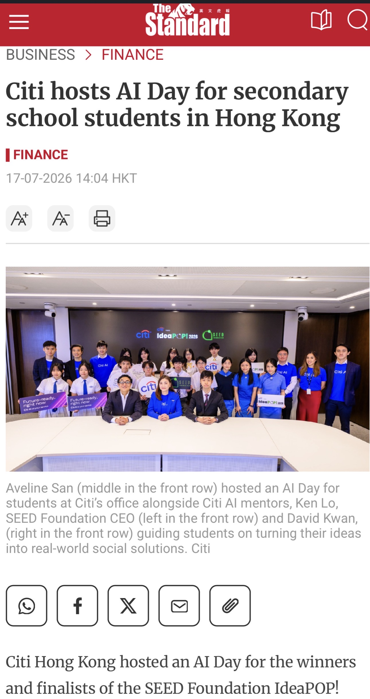
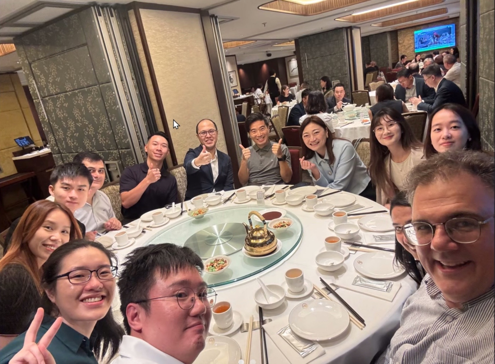
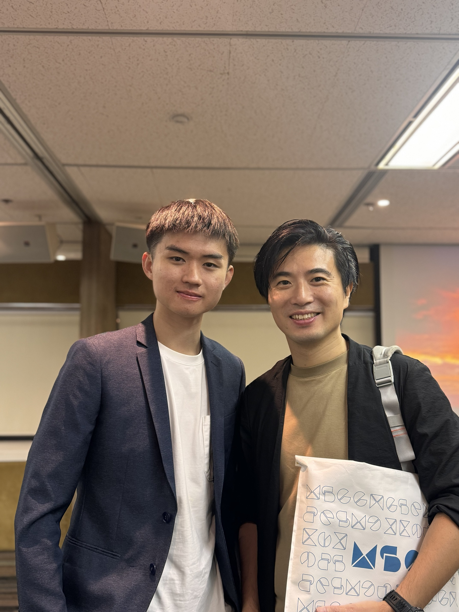

Someone believed first
My mentor Simon Clarke heard my conviction for AI transformation and encouraged me to reach out directly to Citi’s Global CTO. That act of sponsorship opened doors I never expected.
Banking professional · AI adoption advocate
I turn artificial intelligence from an abstract promise into practical tools, trusted workflows, and everyday human capability—then use what I have learned to open doors for the next generation.
Passion · Trust · Resilience · Human-centred transformation

My story
I arrived at Citi ready to learn. Remarkable leaders taught me to do the right thing when it is hard, stay true to my principles, and pursue the work I genuinely love. Their trust gave an early-career dreamer the courage to take bold leaps—and changed the trajectory of my career.
My mentor Simon Clarke heard my conviction for AI transformation and encouraged me to reach out directly to Citi’s Global CTO. That act of sponsorship opened doors I never expected.
I took on stretch AI assignments alongside my daily banking work—learning through rejection, pushback, technical hurdles, and the responsibility to create genuine value.
With supportive leaders and teammates, we established the Citi AI Solution Lab and turned grassroots experimentation into practical enterprise adoption.

Live demonstration of Citi Stylus Workspaces to Hong Kong CEO Aveline San and senior leaders.
Enterprise transformation
AI transformation cannot live in an ivory tower. It works when frontline colleagues understand how it respects their expertise and removes daily friction.
Pairing curious junior talent with experienced leadership showed me that AI is not merely a technology initiative. It is a human evolution—built through psychological safety, intellectual honesty, and the courage to challenge established routines.
“Technology is never the end goal; human enablement is.”
Contributions & impact
My contribution sits at the intersection of strategy, use-case development, executive engagement, and practical adoption. The work connects global direction with the daily realities of bankers, control teams, and clients.
Recognized as a Year-End AI MVP, I supported Citi’s AI transformation by pitching strategies to global senior leadership and facilitating AI strategy across the US, Europe, Hong Kong, and Singapore. I am driving banker-focused AI development for the KYC Source of Wealth process—bridging bankers, clients, and review teams to reduce friction and return frontline capacity to client engagement and revenue-generating work.
As a founding member of the CEO-sponsored AI Solution Lab, I helped drive cross-functional use-case development and implementation. I also contributed to the global AI Engagement Program, built resources for teams worldwide, and participated in the Citi Stylus Workspaces pilot before its launch to 150,000 colleagues globally.
I showcased AI capabilities to 1,700+ colleagues across 28+ sessions, from CEOs, COOs, CAOs, CFOs, and business leaders in Private Bank, Wealth, Corporate Bank, and TTS to functional leaders in BCM, Cybersecurity, and Controls. Dedicated sessions reached extended leadership, JANA Management Trainees, and Internal Audit teams across eight countries. I was also nominated to demonstrate AI to 500+ colleagues at Citi Hong Kong AI Days.
I promoted Copilot and internal AI tools through targeted everyday use cases, then delivered learning on AI foundations, prompt engineering, Claude and Gemini, presentation generation, and token efficiency. I interviewed senior leaders on AI integration and developed an AI dashboard to support management decisions.
As a founding member, I helped pair 30+ senior leaders with AI enthusiasts. Tailored, continuous engagement bridged the knowledge gap, created genuine cross-learning, and helped leaders accelerate adoption across their teams.
From grassroots to global scale
Over the years, I was fortunate to help pilot tools that scaled to approximately 150,000 colleagues worldwide and to lead sessions for more than 1,700 teammates. The goal was never adoption for its own sake: it was smarter workflows, better judgment, and more time for colleagues to serve clients with empathy.

Public validation of the journey from local pilots to enterprise-scale capability.

Coverage of Citi AI tools supporting Hong Kong employees’ daily workflows.
Recognition & responsibility
Being named Citi Hong Kong’s Year-End AI MVP was deeply humbling. I see the recognition not as a finish line, but as a responsibility to uphold high standards, stay grounded, and ensure others receive the same chances I was given.
Skills can be taught, but character, credibility, and trust are built over time.
Paying it forward
My mentors taught me that a meaningful legacy is built by opening doors. That lesson led me to mentor secondary-school students during Citi’s AI Day with the SEED Foundation’s IdeaPOP! programme.
Youth employability in the AI era is not about memorizing prompt tricks. It depends on durable human qualities: critical inquiry, empathy, responsible judgment, and the resilience to treat setbacks as learning feedback.

Gratitude & community
These milestones were made possible by mentors, senior sponsors, AI champions, and teammates who challenged and supported me. Their belief shaped my career; their example shapes how I now show up for others.




What guides me
Responsible transformation starts with integrity—even when the harder path is less convenient.
Be rigorous about what we know, curious about what we do not, and willing to revise our view.
Use AI to amplify human judgment, reduce friction, and create room for more meaningful work.
Turn every opportunity received into a pathway that someone else can walk through.
Building a legacy is not about what you accumulate.
It is about the doors you unlock for others.
Let’s connect
I welcome conversations about responsible AI adoption, reverse mentoring, youth enablement, and practical innovation in banking.